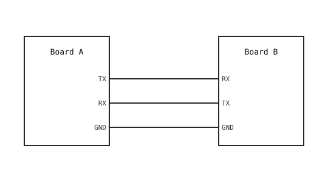

3.18. Osnove UART-a¶
UART (Universal Asynchronous Receiver-Transmitter) najstariji je i najjednostavniji način prijenosa bajtova između dva mikrokontrolera ili između mikrokontrolera i glavnog računala. Dvije žice prenose podatke – po jedna za svaki smjer – a zajednička masa vraća signal. Nijedna strana ne koristi zajednički takt; unaprijed se dogovore o brzini prijenosa (baud) i vremensku usklađenost bitova obnavljaju iz same podatkovne linije.
3.18.1. Okvir¶
Svaki znak na žici omotan je u okvir: startni bit, podatkovni bitovi, neobavezni paritetni bit te jedan ili dva stop bita.

Jedan UART okvir: startni bit, osam podatkovnih bitova i stop bit, svaki širok jedan bitni period (1 / baudrate sekundi).¶
Linija miruje u visokom stanju. Prijemnik prati padajući rub, koji označava početak novog okvira. Zatim uzorkuje podatkovnu liniju jednom po bitnom periodu – obično u sredini svakog bita – i ponovno sastavlja bitove u znak. Stop bit vraća liniju u mirovanje kako bi se mogao otkriti sljedeći startni bit.
3.18.2. Brzina prijenosa (baud)¶
Bitni period – i brzinu veze – određuje brzina prijenosa (baud), odnosno broj bitova u sekundi. 9600, 19200, 38400, 57600, 115200, 230400, 460800 i 921600 standardne su vrijednosti; 115200 je najčešća zadana vrijednost. Obje strane moraju se složiti oko brzine prijenosa unutar nekoliko postotaka, inače prijemnik uzorkuje bitove na pogrešnim točkama i podaci dolaze iskrivljeni.
Veće brzine prijenosa prenose više podataka u sekundi, ali su osjetljivije na duljinu kabela, kapacitet i preciznost taktova na svakoj strani. Za kratke veze između dvije pločice na istom radnom stolu 115200 do 921600 radi udobno.
3.18.3. Ožičenje¶
UART veza koristi tri žice:

UART ožičenje: TX na jednoj pločici ide na RX na drugoj, a obje mase su spojene.¶
TX → RX, u oba smjera. Predajni pin svake pločice je prijemni pin druge pločice. Česta pogreška početnika je spajanje TX → TX – dva izlaza se bore jedan protiv drugoga, bez ikakvih podataka na bilo kojem prijemniku.
Zajednička masa. Razine signala referenciraju se na masu, pa dvije pločice moraju imati zajedničku masu, inače prijemnik vidi pogrešan napon na liniji.
3.18.4. Razine napona i fizički slojevi¶
Razine signala na UART pinovima kamere su 3,3 V CMOS: masa za logičku nulu, 3,3 V za logičku jedinicu. Sve što govori 3,3 V CMOS UART – drugi mikrokontroler, USB-na-serijski adapter postavljen na 3,3 V, 3,3 V GPS modul – može se izravno ožičiti.
Napomena
5 V CMOS UART uređaji (stariji mikrokontroleri, određeni GPS moduli, neke starije senzorske pločice) govore isti UART okvir na 5 V logičkim razinama. Njihovo izravno ožičenje na kameru nije sigurno: 5 V TX koji pobuđuje RX kamere prelazi apsolutni maksimalni ulazni napon na kamerama koje nisu otporne na 5 V, a 3,3 V TX kamere možda neće dosegnuti visoki prag 5 V uređaja za jasnu logičku jedinicu.
Pretvorba između dva napona zahtijeva aktivni linijski pobuđivač – namjenski dvosmjerni IC za pomak razine s vlastitim pobudnim tranzistorima na obje strane svake linije. Pasivni pretvarači s MOSFET-om i pull-up otpornikom iz Pomak naponske razine ovdje nisu dovoljni: njihovi rastući rubovi oslanjaju se na punjenje linije kroz otpornik, što je u redu pri brzinama prekidanja, ali predaleko presporo za UART. Pri 115200 baud svaki bit traje oko 8 µs, a RC promjena pasivnog pretvarača razmazuje jedan bit u sljedeći.
Aktivni linijski pobuđivač proizvodi čiste rubove u oba smjera pri punim UART brzinama. Odaberite dio ocijenjen za brzinu prijenosa pri kojoj će veza raditi, ožičite TX i RX kamere na 3,3 V stranu pretvarača te ožičite TX i RX 5 V uređaja na 5 V stranu pretvarača.
Tri starija fizička sloja koriste isti okvir, ali različite napone, i zahtijevaju pretvarač razine između sebe i 3,3 V mikrokontrolera:
RS-232. Koriste ga serijski priključci na stolnim računalima i nekoj industrijskoj opremi. Linija se njiše između otprilike
±5 Vi±15 V, s mirovanjem na negativnoj razini. Obrnuti polaritet i visok napon u usporedbi s CMOS-om; čip iz obitelji MAX232 / MAX3232 (ili slično) obavlja pretvorbu.RS-422. Diferencijalni standard signalizacije za veze točka-do-točke (jedan pobuđivač, do deset prijemnika). Pobuđivač šalje na uravnoteženom paru žica; prijemnik vidi razliku između njih i ignorira zajedničku šumnu smetnju usput. Veze u punom dupleksu koriste dva para – po jedan za svaki smjer. RS-422 doseže desetke metara do kilometra ovisno o brzini prijenosa, a primopredajni RS-422 čip nalazi se između TX / RX kamere i uravnoteženog para.
RS-485. Višetočkasti rođak RS-422 – ista diferencijalna signalizacija, ali dizajnirana za smještaj do 32 pobuđivača i prijemnika na jednoj sabirnici. Većina veza su poludupleks na jednom paru, pri čemu pobuđivač i prijemnik svakog čvora dijele iste žice, a softver arbitrira tko govori. Koristi se u industrijskim automatizacijskim sabirnicama (Modbus, DMX512, Profibus) gdje žice vode daleko, a šum je loš; primopredajni RS-485 čip nalazi se između TX / RX kamere i diferencijalnog para.
Oba i dalje šalju UART okvire na temeljnoj bitnoj razini. Konfiguracija machine.UART kamere (brzina prijenosa, bitovi, paritet, stop bitovi) jednaka je bez obzira na to koji fizički sloj prenosi signal na drugoj strani primopredajnika.